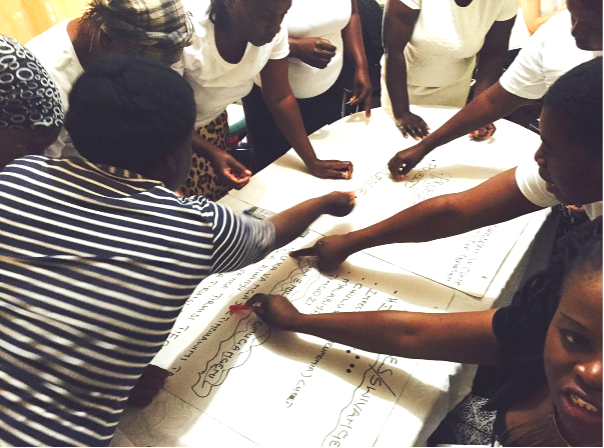

Better evidence
Health systems often know too little about the priorities of those who are excluded from health and information systems, especially in rural settings.

About
VAPAR is a long-term health policy and systems research learning platform based in Mpumalanga, South Africa. Developed through partnership among communities, Mpumalanga Department of Health, the MRC/Wits Agincourt Research Unit and university collaborators, it connects locally generated evidence with collective reflection, action and learning. The platform has been supported across successive phases by UK and international research funders, including the Health Systems Research Initiative and the UK Medical Research Foundation.
“There have been a lot of service delivery protests in communities, but they did not accomplish much; everyone realised that it is time to shift our ways of thinking and initiate dialogue, unite and collaborate and create sustainable partnerships to solve community problems.”Community stakeholder
Our learning platform addresses exclusion from access to health systems by connecting service users and providers to generate and act on research evidence of practical, local relevance.
It brings together mortality data, lived experience, participatory analysis and implementation learning so that local knowledge can inform how problems are understood and how services respond.

What the platform connects
Health systems often know too little about the priorities of those who are excluded from health and information systems, especially in rural settings.
Even where evidence exists, it is not always interpreted, shared or taken up in ways that shape planning, delivery and collective response.
How VAPAR works
01
Use verbal autopsy, routine data, narratives and participatory methods to surface local priorities and explain how they are produced.
02
Bring communities, health workers, managers and researchers together to interpret findings and identify entry points for action.
03
Translate collective analysis into practical responses, from Community Health Worker tools and training to policy engagement.
04
Review what happened, why it happened and what this means for future action, adaptation and system uptake.
Where we are
The platform was developed through the VAPAR programme at the MRC/Wits Agincourt Rural Public Health and Health Transitions Research Unit. Agincourt hosts a long-standing Health and Socio-demographic Surveillance System, within which mortality evidence, local knowledge and participatory learning have been brought together over the past decade.
Across this period, the work has grown from community-based inquiry and joint reflection to practical tools, training materials, research briefs, policy influence and province-wide Community Health Worker training.